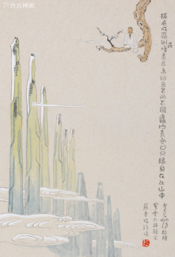

题西林壁
宋.
苏轼
横看成岭侧成峰，
远近高低各不同，
不识庐山真面目，
只缘身在此山中。
苏轼由黄州贬赴汝州任团练副使时经过九江，游览庐山。
瑰丽的山水触发逸兴壮思，于是写下了若干首庐山记游诗。《题西林壁》是游观庐山后的总结，它描写庐山变化多姿的面貌，并借景说理，指出观察问题应客观全面，如果主观片面，就得不出正确的结论。开头两句“横看成岭侧成峰，远近高低各不同”，实写游山所见。庐山是座丘壑纵横、峰峦起伏的大山，游人所处的位置不同，看到的景物也各不相同。这两句概括而形象地写出了移步换形、千姿万态的庐山风景。后两句“不识庐山真面目，只缘身在此山中”，是即景说理，谈游山的体会。为什么不能辨认庐山的真实面目呢？因为身在庐山之中，视野为庐山的峰峦所局限，看到的只是庐山的一峰一岭一丘一壑，局部而已，这必然带有片面性。游山所见如此，观察世上事物也常如此。这两句诗有着丰富的内涵，它启迪我们认识为人处事的一个哲理——由于人们所处的地位不同，看问题的出发点不同，对客观事物的认识难免有一定的片面性；要认识事物的真相与全貌，必须超越狭小的范围，摆脱主观成见。